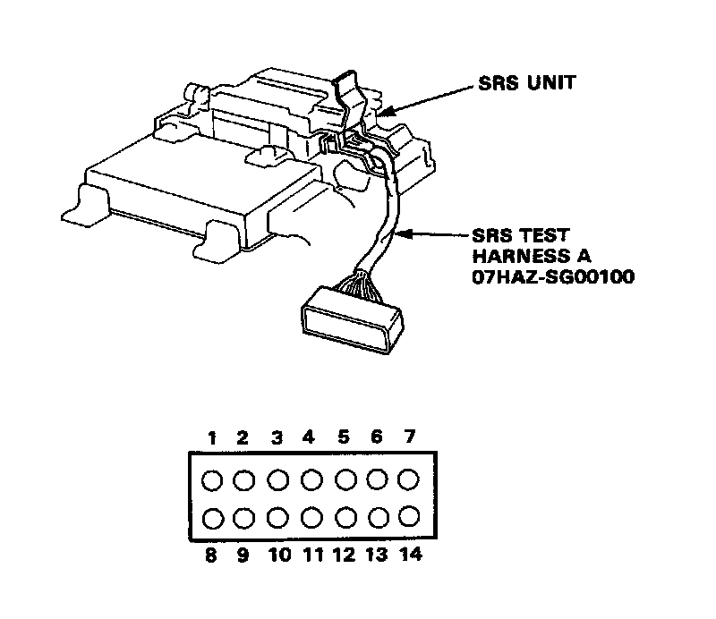
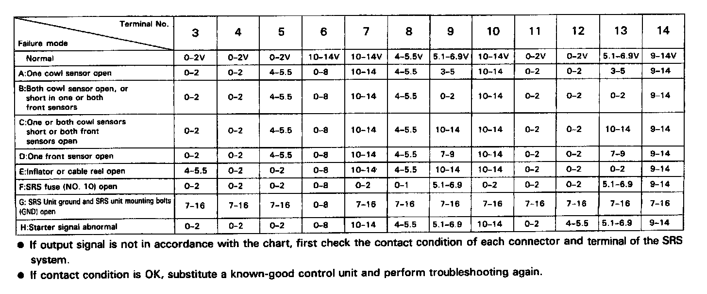

Indicator Stays on Continuously
SRS Indicator Light Stays On Continuously

Connector View
Connect test harness A to the SRS unit and check voltages
(to ground) according to the chart below.

Failure Mode Chart
NOTES:
- Turn the ignition switch ON.
Voltages in the chart assume an original "battery voltage" of approximately 12V.
- GA significantly discharged battery (less than 12V) will result in different and possibly false readings.
- Do not connect the short connector to the airbag connector when checking these voltages.